Part 3: Over the Mountain
Journey to Seascape Town
Time to make our trek to Seascape Town via a small cave. The guard at the entrance takes his leave to go inform everyone at the castle that the king has made his escape from Kefka's clutches relatively unscathed. Right after he leaves, his relief comes in, apparently allergic to chocobos. Poor guy.
What's interesting though? This guard is known as Hector and he joins for this run through the cave. He's nothing special stat or skill wise, but he's another target for the enemies to waste attacks on.
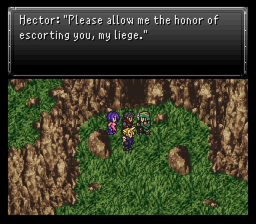Besides random Killer Bees skulking about (which you could have run into outside of Fraust), there's Wallmasters & Cursed Dolls. Both pack a fairly decent punch with their attacks with the former having a skill that can inflict sleep (Sleep Scratch) while the latter has a move that can petrify (Dread Gaze). Cursed Dolls are susceptible to confusion so Serin popping a quick use of his Cosmic Fang can control the fight pretty easily, especially if a Dread Gaze gets aimed at an enemy. Wallmasters can also use the Jump skill, which vaults them off-screen where you cannot target them, then they fall back down a few seconds later on a party member for extra damage. But it's mostly just annoying because it causes your attacks to miss.

The cave is very small with only five rooms to it, but the first room contains a healing spring to fully refresh everyone, making it a great place to grind if you need it. The second room is the largest and houses all the treasure in this place. Remember that chests with upgraded loot as the game progresses are no more so loot away. You'll find an Elixir, Ether, and Shelter in total.
Once you reach the last room of the cave, Hector leaves to return to his guard duties, but he left a bit too early because there's a Zombie (weak to fire) for the others to contend with.
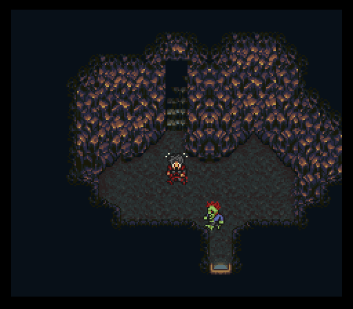It hits rather hard, over 200 damage on a frontliner, but that's all it does damage wise so keeping one person on standby to use a Potion if needed will keep you afloat...at least for a while. The Zombie also can use Bite to inflict the aptly named zombie status to a target. The afflicted drops to 0 hp and will attack ally or enemy. Karma Jolts will reverse the effects, but it'll be as if they were resurrected via a Recharge so be ready with a Potion to bring the character out of critical.
With 1400 hp and an innate hp regen of roughly 35-40+ health per tick, Cloud & Aurora should pile on the offense with Braver/Blade Beam & Cure respectively. Serin can't really do much so leave him on standby to toss heals or Karma Jolts as it's required.
Alternatively if you took the Holy Water item from a chest back at the castle, use it instead for a quick kill!
Note: Use a curative spell on an undead creature for maximum damage. Curative items, however, are no longer permited to be used against monsters.
Once you exit the cave, there's some new enemies skulking about like Cerathos, Moblins, and Overseers. Moblins can be annoying via inflicting stop with Energy Web and Cerathos can hit hard with Mega Volt, and counter magic with it as well, but otherwise nothing that you can't handle by throwing all your offensive might out each battle. Overseers can counter physical attacks with Reverse Polarity. Really nice gil gains from battles here too with a pack of four Moblins dishing out over 1k gil for a relatively easy kill.
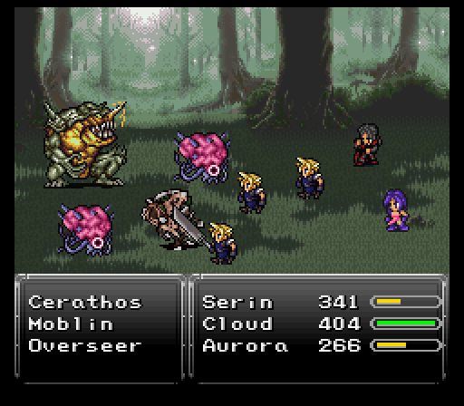Seascape Town
To reach Seascape Town, head east from the cave exit until you hit the ocean. From there, the town is to the south. Seascape Town is more or less a rest point to stock up on items, search for treasure, and gather intel. The main selling point is not an old Mortal Kombat loonie being a major drunkard, but someone by the name of Master Oyama taking two of his disciples to Mt. Zephyr in the north for some meditation & training. One of them just so happens to be Ronan, but the other? Legendary DBZ mockery idol Raditz. That's going to blow up in his face somehow, right?

At the pub you'll find a notoriously dangerous person and his dog that you may have noticed when you first entered the town. Something tells me we'll be seeing more of them later.

As for the shops, there's some interesting stuff in the armory for Aurora. There's a Diffusal Rod, Wizard's Hat, and Vanish Cloak. The hat & cloak provide boosts to her magic stat, but all three items teach her a spell. Diffusal Rod teaches Dispel (strips beneficial status effects from a target) at a x3 rate, Wizard's Hat teaches Teleport (warps you out of a dungeon or battle) at a x5 rate, and Vanish Cloak teaches Vanish (makes the target invisible and able to dodge all physical strikes, but magic will always hit) at a x2 rate.
Note: Heavier armor usually comes with a speed drawback, such as the Iron Armor.

As for the relic shop, there's the Paladin Icon & Star Pendant. The former grants 100% hit rate with the Attack command and the ability to take blows for party members in critical status while the latter grants immunity to poison & petrify. The Vambrace, while expensive, increases physical damage output by 50%, at the loss of being able to equip a shield. Paired with a Power Glove relic that you'll soon get, you can do some very good damage and even one-shot some monsters.
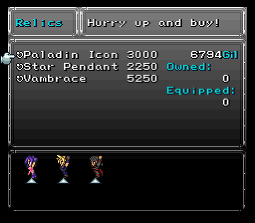I get a Paladin Icon and give it to Serin since he is the most tanky and his skills do the same damage from the back row, three Star Pendants for all to avoid headaches while crossing Mt. Zephyr, and one Vambrace for Cloud.
Just south of the Chocobo Stable is Error's house. Hello Zelda II reference! There's an odd little fella in the basement that sells Ether.

Now is the time to grind a bit outside in order to gain another level or two, buy everything that was mentioned, and learn the spells from the equipment for Aurora. Then finally from the item shop purchase 20-30 potions, a bunch of Clear Eyes, some Recharges, and a few of every other item. If you did not get three Star Pendants you'll wanna make sure to buy extra Aqualins and Tissues. When you're all ready to go, you can exit town and go north to Mt. Zephyr. You can take a small detour to a hut on the way though to find out it's where Ronan lives. He's not in though because, shock and awe, Raditz killed Oyama so he went into the mountain to take revenge.

Mt. Zephyr
With that out of the way...Mt. Zephyr is located directly north of Seascape Town.
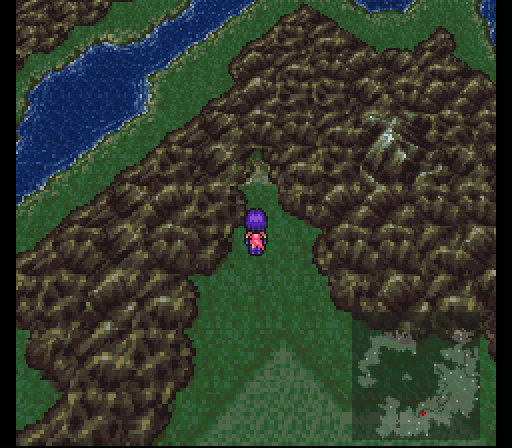Most of the enemies of Mt. Zephyr are relatively docile in terms of their attacks. Cockatrices are an exception only because they can petrify, which is the main reason everyone has a Star Pendant equipped. Hunters (from the Resident Evil universe) are probably the most dangerous just because they can counter Magic and Aether with an attack that inflicts berserk. Sentries special attack causes Dark status, which is why we need a bunch of Clear Eyes. They are weak to ice.


There's a rare encounter with a Predator, you know, from the movie Predator. They are pretty tough, but you can kill them instantly with the Break spell.
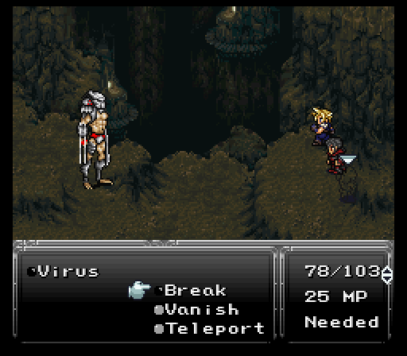The dungeon overall's pretty linear with some detours here and there. The detours are well worth it though for some of the loot. Some of the good things include the following:
Magic Tab - Something I haven't really touched on yet, but there's stat boosting items sprinkled throughout the game. Each tab boosts a stat by 1. This one boosts magic power. Disperse them however you'd like, either to a character that is lacking in a particular stat, or the opposite, a character that already excels in it to maximize their potential even more.
4k gil - Pretty beastly considering Neko is going to show up near the boss of this area and have some nice gear worth picking up.
 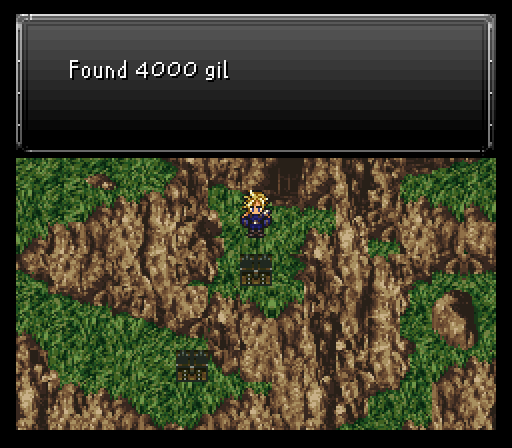
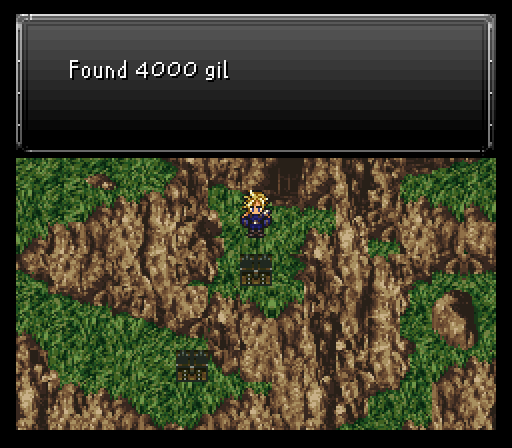
Power Glove - Atlas Armlet from vanilla basically, raising the physical damage the wearer does. Serin can make very good use of this alongside his Sonic Shot. Also search to the right of the chest behind the wall to find an extremely well-hidden Beast Hide, which you can sell later on for some gil.
Poison Nova - Serin gets a new Aether here! This does magical lightning & wind damage to all enemies and inflicts poison status.
 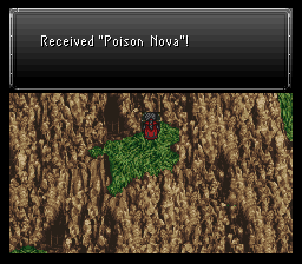
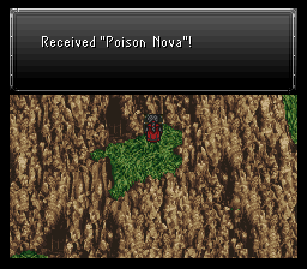
X-Potion - Betcha you wouldn't have guessed this is hidden due south from the save point.
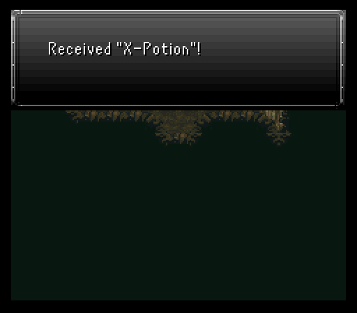If you ever need to get out of battle fast, don't forget about the Teleport spell. On the right we see how the Paladin Icon on Serin is a big help, he even jumped over to the other side to protect Aurora!

The opening to the north leads to a big, ugly-looking plant that's blocking a treasure chest. Go ahead and choose to cut it down and you'll proceed to strike it repeatedly until it is no more. But then of course it regrows itself and a fight ensues. This plant certainly can't be considered a boss, but it does hit harder than the current monsters and is a higher level. It uses spells like Sleep and Drain.
 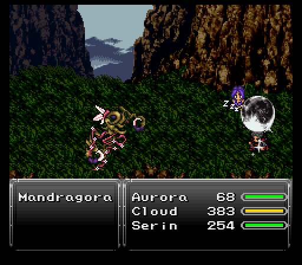
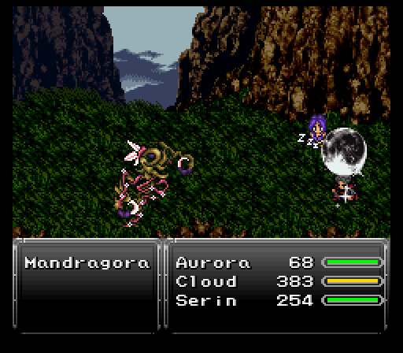
It is weak to fire, as most plant monsters are, and will spawn back after being killed a total of three times. Once it's defeated for good, you'll get a decent amount of Spell Points for Aurora if she still has spells to learn from her equipment, and you can take the Soma Drop that's inside the chest. Just like the other stat boosting items, this one boosts a character's mp by 10. The logical choice for now would be to use it on Aurora, or you can save it for later.
Neko will be right along your walking path after the save point. Besides some assorted items, the cat has a few new pieces of gear available. The Mystic Sword only is useful to Aurora right now because it uses mp to fuel guaranteed crit hits, but the Fighter Hat & Ninja Gear are both solid upgrades for Cloud.
Mystic Aurora: Equip a Mystic Sword, Vambrace and Power Glove on Aurora for some serious attack damage! Note that in this mod, mp-costing critical hit weapons scale mp cost by character level; the higher the level, the more the mp cost will be.
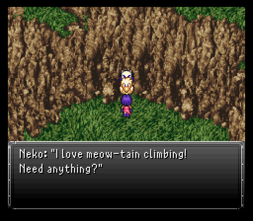Soon after the cat, you'll find some jerk blocking the entrance into the final cave passage. That jerk is none other than local Dragonball Z's bumbling idiot saiyan Raditz. Claiming that Ronan sent the trio, he decides to be lazy and send a couple of Saibamen out to fight first.
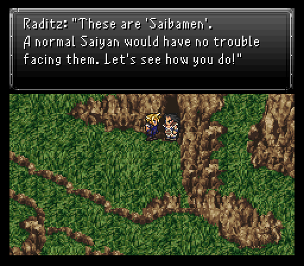For being what amounts to sacrificial pawns in the DBZ universe, these Saibamen can pull off some rather annoying moves. Primal Rage (berserk), Vanish to make themselves invisible until struck by magical attacks, and even one move never used here called Rock Barrage (inflicts confusion and deals damage...oh, and it hits the entire party) are just a few examples.
Oh, and they aren't Saibamen without their trademark ability to self destruct. While they won't do this until they get to low hp, it's very possible to see someone take a dirt nap since they both have a touch more than 3k hp.
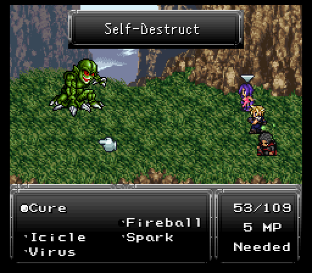Best thing you can do here is damage both equally until they get to around 1000-1500 hp, then focus one down. That way, you don't have to risk eating two suicidal green monster bombs back to back.
As for steals, while both have Potions available, they have a rare steal of a Titan Claw.
Once both have been vaporized, your party will be miraculously healed back to full and Raditz finally decides to get his lazy ass into gear and attacks himself.
For all his implied cowardice, Raditz shows just how fierce saiyan pride is. He regularly attacks twice per turn and has some powerful attacks thrown into the mix. He's got magical moves (Gale Cut, Saintly Beam, and Shock Wave), gravity based moves (Energy Blade, Sonic Boom), and even a move he never used here, Fists of Thunder. That hits one target VERY hard, roughly 550+ damage or so.

Cloud should be on full-blown offense here spamming Braver or Blade Beam and always having Climhazzard charged. The others should attempt to steal Raditz's Titan Claw, then focus on healing, attacking only when there's an opening. If you have Aurora equipped with a Mystic Sword and Power Glove, she can dish out quite a bit of damage, at the risk of having less opportunities to keep the party healed. And for even more damage you can equip her with a Vambrace as well, which will greatly increase her already high damage, but she will take a bunch more damage without a shield. This strategy is more viable on the lower difficulties and is quite a bit of fun.
Once enough damage has been dealt, Ronan comes in to save the day. Even after the rest of the team gets blown away, he manages to stick around and promptly kick Raditz's ass via his Aura Blast move from his Combo command. Aura Blast is Right, Down, Left, A buttons.

After Raditz escapes like a pansy, Ronan offers his services to the team as they continue towards the Crimson Blades' hideout. Luckily the mountain tour ends shortly after he joins, then it's just a short trip northeast, then east across a bridge to the resistance hideout.
At this point you can also return to Seascape Town and visit Oyama's wife, Mitsu, to see a special little scene with Ronan. You'll receive a variety pack of status tabs for doing so.